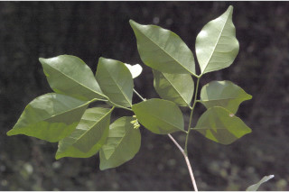
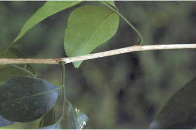
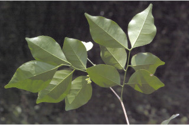
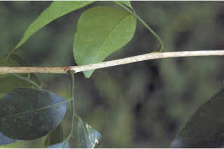

Large shrubs or small trees
ದೊಡ್ಡ ಗಾತ್ರದ ಪೊದೆಗಳು ಅಥವಾ ಸಣ್ಣಗಾತ್ರದ ಮರಗಳು.
Large shrubs or small trees
பெரிய குத்துச்செடி அல்லது சிறிய மரம்
Bark grey, fissured; blaze cream.
ತೊಗಟೆ ಬೂದು ಬಣ್ಣ ಹೊಂದಿದ್ದು ಸೀಳಿಕಾ ಮಾದರಿಯಲ್ಲಿರುತ್ತದೆ;ಕಚ್ಚು ಮಾಡಿದ ಜಾಗ ಕೆನೆ ಬಣ್ಣ ಹೊಂದಿರುತ್ತದೆ.
Bark grey, fissured; blaze cream.
மரத்தின் பட்டை சாம்பல் நிறமானது, வலைப்பின்னல் பிளவுகளுடையது; உள்பட்டை கீரிம் நிறமானது.
Branchlets terete, glabrous, whitish.
ಕಿರುಕೊಂಬೆಗಳು ದುಂಡಾಗಿದ್ದು ರೋಮರಹಿತವಾಗಿರುತ್ತವೆ ಮತ್ತು ಬಿಳಿ ಬಣ್ಣದ ಛಾಯೆ ಹೊಂದಿರುತ್ತವೆ.
Branchlets terete, glabrous, whitish.
சிறியநுனிக்கிளைகள் குறுக்குவெட்டுத் தோற்றத்தில் வளையமானது, உரோமங்களற்றது, வெள்ளை நிறமானது.
Leaves compound, imparipinate, alternate, spiral; rachis terete, glabrous; petiolule up to 0.4 cm long; leaflets 5, alternate 3.5-7.5 X 2-3 cm, elliptic, apex shortly acuminate with retuse tip, base asymmetric, margin entire or crenulate, chartaceous, dark green, glandular punctate; midrib raised above; secondary_nerves 6-10 pairs, looped near margin; tertiary_nerves obscure to broadly reticulate.
ಎಲೆಗಳು ಸಂಯುಕ್ತವಾಗಿದ್ದು, ಸಾಮಾನ್ಯವಾಗಿ ಅಸಮ ಸಂಖ್ಯೆ ಏಕಗರಿ ರೂಪಿಗಳಾಗಿರುತ್ತವೆ, ಪರ್ಯಾಯ ಮತ್ತು ಸುತ್ತು ಜೋಡನಾ ವ್ಯವಸ್ಥೆಯಲ್ಲಿದ್ದು ರೋಮರಹಿತವಾಗಿರುತ್ತವೆ;ಅಕ್ಷದಿಂಡು ದುಂಡಾಗಿದ್ದು ರೊಮರಹಿತವಾಗಿರುತ್ತವೆ; ಉಪತೊಟ್ಟುಗಳು 0.4 ಸೆಂ.ಮೀವರೆಗಿನ ಉದ್ದ ಹೊಂದಿರುತ್ತವೆ;ಕಿರುಪತ್ರಗಳು 5 ಇದ್ದು ಪರ್ಯಾಯ ಮಾದರಿಯಲ್ಲಿ ಜೋಡಿತಗೊಂಡಿರುತ್ತವೆ, 3.5 - 7.5 X 2 – 3 ಸೆಂ.ಮೀ. ಗಾತ್ರ,ಅಂಡವೃತ್ತದ ಆಕಾರ,ಅಗಲವಾದ ಹಾಗೂ ದುಂಡನೆಯ ತುದಿಯಲ್ಲಿ ತಗ್ಗುಳ್ಳ ಅಗ್ರವನ್ನುಳ್ಳ ಕ್ರಮೇಣ ಚೂಪಾಗುವ ತುದಿ, ಅಸಮಪಾರ್ಶ್ವತೆಯುಳ್ಳ ಬುಡ,ನಯವಾದ ಅಥವಾ ಸೂಕ್ಷ್ಮ ದುಂಡೇಣಿನ ದಂತಗಳ ಸಮೇತವಿರುವ ಅಂಚು,ಕಾಗದವನ್ನೋಲುವ ಮೇಲ್ಮೈ ಹೊಂದಿದ್ದು,ಕಡು ಹಸಿರು ಬಣ್ಣದಲ್ಲಿದ್ದು,ಮಚ್ಚೆ ರೀತಿಯ ರಸಗ್ರಂಥಿಗಳ ಸಮೇತವಿರುತ್ತವೆ;ಮಧ್ಯನಾಳ ಪತ್ರದ ಮೇಲ್ಭಾಗದಲ್ಲಿ ಉಬ್ಬಿರುತ್ತವೆ;ಎರಡನೇ ದರ್ಜೆಯ ನಾಳಗಳು 6-10 ಜೋಡಿಗಳಿದ್ದು ಅಂಚಿನ ಬಳಿ ಕುಣಿಕೆಗೊಂಡಿರುತ್ತವೆ;ಮೂರನೇ ದರ್ಜೆಯ ನಾಳಗಳು ಅಸ್ಪಷ್ಟವಾಗಿರುವುದರಿಂದ ವಿಶಾಲ ಜಾಲಬಂಧ ನಾಳ ವಿನ್ಯಾಸದವರೆಗಿನ ಮಾದರಿಯಲ್ಲಿರುತ್ತವೆ.
Leaves compound, imparipinate, alternate, spiral; rachis terete, glabrous; petiolule up to 0.4 cm long; leaflets 5, alternate 3.5-7.5 X 2-3 cm, elliptic, apex shortly acuminate with retuse tip, base asymmetric, margin entire or crenulate, chartaceous, dark green, glandular punctate; midrib raised above; secondary_nerves 6-10 pairs, looped near margin; tertiary_nerves obscure to broadly reticulate.
இலைகள் கூட்டிலை, ஒற்றைபடை சிறகு வடிவக்கூட்டிலைகள், மாற்றுஅடுக்கமானவை, சுழல் போன்று அமைந்தவை; மத்தியகாம்பு (ராக்கிஸ்) குறுக்குவெட்டுத் தோற்றத்தில் வளையமானது, உரோமங்களற்றது; சிற்றிலைக்காம்பு 0.4 செ.மீ. நீளமானது; சிற்றிலைகள் 5, மாற்றுஅடுக்கமானவை 3.5-7.5 ´2-3 செ.மீ., நீள்வட்ட வடிவானது, அலகின் நுனி குட்டையான அதிக்கூரியதுடன் அதன் முனையில் சிறு பிளவுடையது (ரெட்யூஸ்), அலகின் தளம் சமமற்றது, அலகின் விளிம்பு முழுமையானது அல்லது சிறிய பிறை போன்ற பற்களுடையது, சார்ட்டோசியஸ், கரும்பச்சை நிறமானது, ஒளிபுகும் சுரப்பி புள்ளிகளுடையது; மையநரம்பு மேற்புறத்தில் அலகின் பரப்பைவிட உயர்ந்து இருக்கும்; இரண்டாம் நிலை நரம்புகள் 6-10 ஜோடிகள், ஒன்றொடுன்று விளிம்பின் அருகில் (லுப்) இணைந்தவை; மூன்றாம் நிலை நரம்புகள் மற்றும் பிற நரம்புகள் கண்களுக்கு புலப்படாது முதல் அகன்ற வலைப்பின்னல் போன்றவை.
Inflorescence few flowered panicles, axillary; flowers white, subsessile.
ಪುಷ್ಪಮಂಜರಿಗಳು ಅಕ್ಷಾಕಂಕುಳಿನಲ್ಲಿನ, ಕೆಲವು ಹೂಗಳುಳ್ಳ ಪುನರಾವೃತ್ತಿಯಾಗಿ ಕವಲೊಡೆಯುವ ಮಧ್ಯಾಭಿಸರ ಮಾದರಿಯವು;ಹೂಗಳು ಬಿಳಿ ಬಣ್ಣದವುಗಳಾಗಿದ್ದು, ಉಪತೊಟ್ಟುಗಳನ್ನು ಹೊಂದಿರುತ್ತವೆ.
Inflorescence few flowered panicles, axillary; flowers white, subsessile.
மஞ்சரி குறைந்த மலர்களுடைய பேனிக்கிள் வகை, இலைக்கோணங்களில் காணப்படுபவை; மலர்கள் வெள்ளை நிறமானது, காம்பற்றது அல்லது மிகச்சிறிய காம்புடையது.
Berry ellipsoid, red when ripe; seeds 1-2.
ಬೆರ್ರಿಗಳು ಅಂಡವೃತ್ತದ ಆಕಾರದಲ್ಲಿದ್ದು,,ಕಳಿತಾಗ ಕೆಂಪು ಬಣ್ಣ ಹೊಂದಿರುತ್ತವೆ;ಬೀಜಗಳ ಸಂಖ್ಯೆ 1 ರಿಂದ 2.
Berry ellipsoid, red when ripe; seeds 1-2.
முழுச்சதைகனி (பெர்ரி) நீள்வட்ட வடிவானது, கனியும் போது சிவப்பு நிறமானது; விதைகள் 1-2.

 


